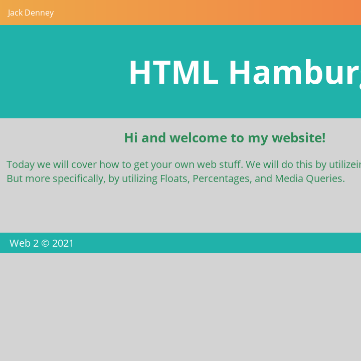

JACK DENNEY
Hello my name is Jack,
This is my website. Feel free to take a look around. I have a ton of little projects that I have completed over time. I love to row and am really into computers. This is showcaseing my current web skills: html, css, javascript. I love my dog Rosie, she is a english bulldog. I haven't desided where I want to go for college but I will soon. Take a look around my current skills and let me know if you think I should improve anything!
MA: Project 1
What do you know? This was my first Web Design 2 Project. The details are pretty simple.

CSS Hamburger Menu Demo
I had to edit one of my demos by adding a hamburger menu to my website. Nothing to complicated but a bit fun.

MA: Mid-term Project
This was a group project for Web 2 but I completed the home page and the About Us sections.
Mini-Project - Home Page Facelift
This was a mini HW project where I redesigned my rowing boathouse website.